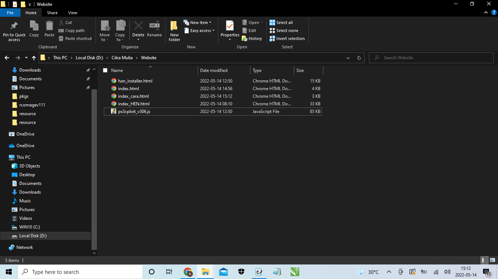

CARA INSTALL HEN PRO:
Download file HEN 4.89.1 PRO-nya
Kemudian, Ekstrak Filenya di laptop copykan file dibawah ini:
-HEN.pkg
-explore_plugin.sprx
-software_update_plugin.rco
-coldboot.raf
-category_game.xml
-videoplayer_plugin.sprx
----------------------------------------------------------------
setelah dicopy ke flasdisk,
Nyalakan PS3-nya,
koneksikan internet psnya,
tancapkan flasdisk di slot kanan,
buka internet browser, tekan start distik,
hapus isi textnya pencet (KOTAK),
masukkan Link ini,
(zeroogamess.github.io/HAN/),
Tekan (START),
pilih 'HAN Installer',
Pilih (OK),
pilih 'Initiliaze HAN Installer',
tunggu saja,
jika sudah succes,
pencet 'Launch HAN',
PS akan restar sendiri
------------------------------------------------------
Pastikan di menu XMb ada , Apphan/Offline_Enable
Dibuka dan pilih debug package enabler, tunggu saja sampe dia kembali normal,
kembali ke menu XMB, cari (package manager > install package files > standar > install HEN.pkg)
---------------------------
Matikan PS3,
Nyalakan Kembali PS3,
PS3 akan meminta 'Rebuild Database',
Enterkan saja
Selamat, PS3 kamu menjadi HEN 4.89.1 PRO
pastikan Flasdisk / Harddisk Berformat FAT32, dan copykan Ke-6 filesnya diluar folder flasdisk misal:
(X:/Copy files yg baru diesktrak tadi) X -> huruf abjad nama flasdisk kalian,
Contoh pada gambar dibawah:

github.com/ZerooGamess